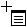

The averaged spectrum of an RT range in the chromatogram can be generated.
Right-click at one end of an RT range in a chromatogram and drag to the other end.
Note:
The mouse pointer appears as .
Click in the plot area as shown below.
Release the right mouse button.
The Averaged Spectrum dialog appears.
Click [OK].
Adjust the RT range if necessary.
The spectrum produced by averaging all the spectra in the selected RT range appears.
If you select the Stacked display mode, you can display the averaged spectra of multiple RT ranges of a chromatogram.